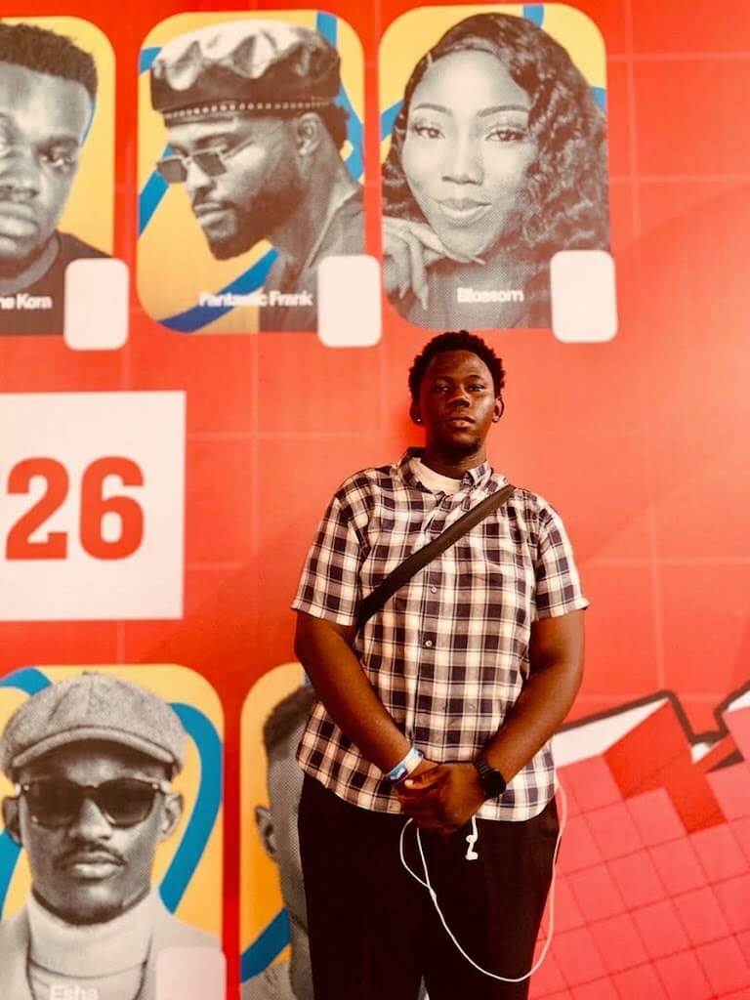

WDD 130 | Godiva Aigbosurea
My favourite city is Benin City
Benin City is the capital of Edo State, Nigeria. It is a historic city known for its rich culture, traditional arts, and the famous Benin Kingdom.
The city is also known for its friendly people, local food, and important historical sites. Benin City is one of the major cities in southern Nigeria.
